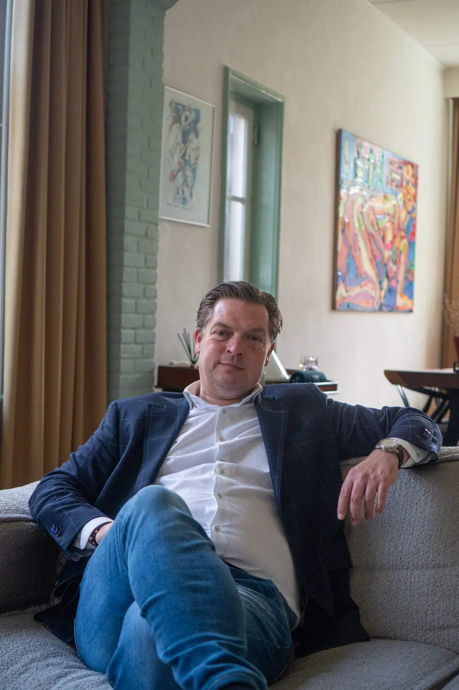

Externe kunde zorgt voor interne progressie.
Een probleem zien is nog geen oplossing. Wie er middenin zit, wordt er vaak blind voor. Wij kijken ernaar met de blik van een buitenstaander.

Inzichten zijn geen oplossingen. Wij leveren geen kant-en-klare antwoorden.
We begeleiden complexe adviestrajecten en strategische keuzes door achtergrond, expertise en ervaring uit andere organisaties mee te brengen naar uw vraagstuk.
In plaats van een oplossing over te nemen, inspireren we management, teams of afdelingen om die zelf te ontwikkelen. Zo bouwen we aan interne motivatie en collectief vertrouwen, voortbouwend op wat er al aan kwaliteit aanwezig is.
Dat vraagt om geduld en een goed oor: eerst luisteren naar wat er speelt, dan pas adviseren. Een advies dat niet aansluit bij de mensen die het moeten uitvoeren, blijft op papier staan.
Bij complexe vraagstukken en strategische keuzes.
Als een organisatie al langer tegen hetzelfde aanloopt en er, juist door de gewenning, zelf lastig uitkomt. Onze toegevoegde waarde is het benutten van het potentieel dat er al is, niet het opleggen van een extern model.
- Een commerciële strategie die niet meer aansluit bij de markt
- Een organisatiestructuur die groei in de weg zit
- Een team dat vastloopt in oude gewoontes
In elk van die situaties geldt hetzelfde uitgangspunt: eerst begrijpen, dan pas adviseren.
Advies is vaak het begin.
Loopt u vast op een vraagstuk?
Vertel Frank waar u tegenaan loopt. Een kort gesprek is genoeg om te bepalen of een blik van buiten helpt.